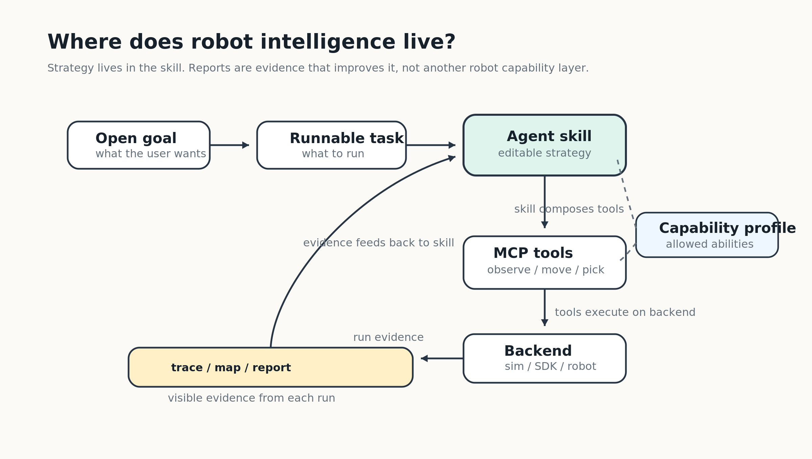
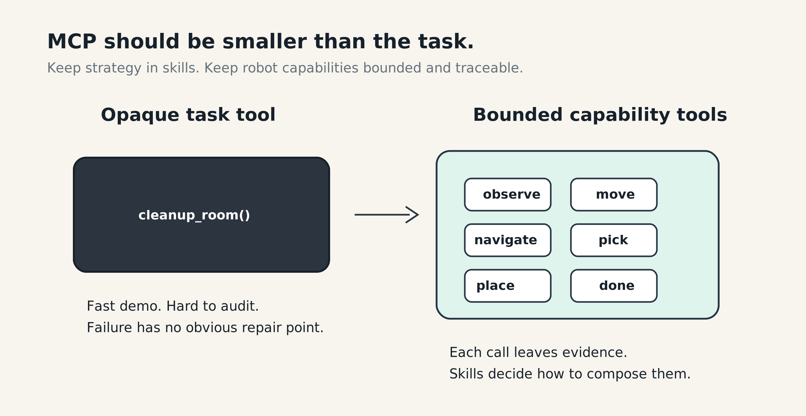
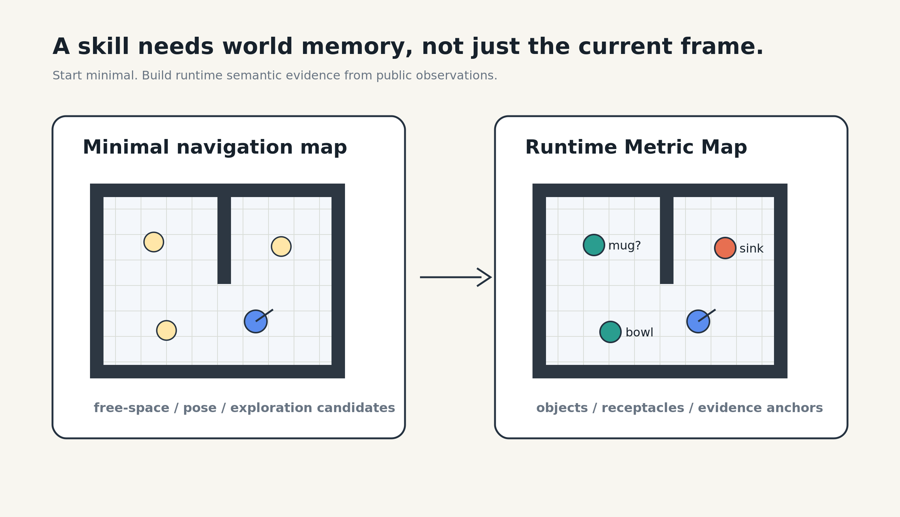
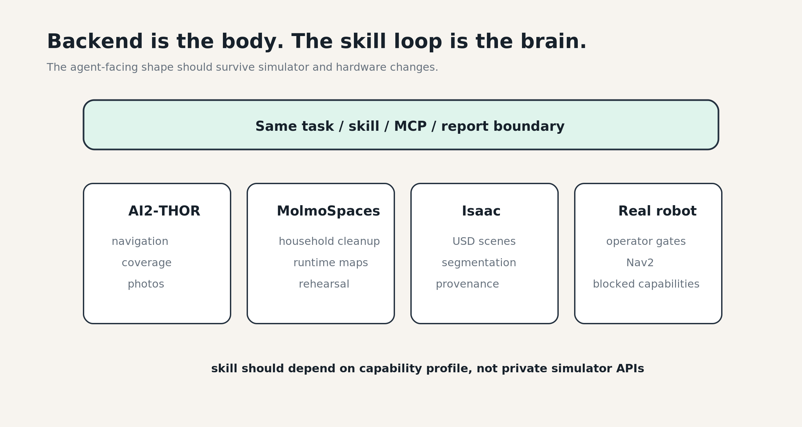
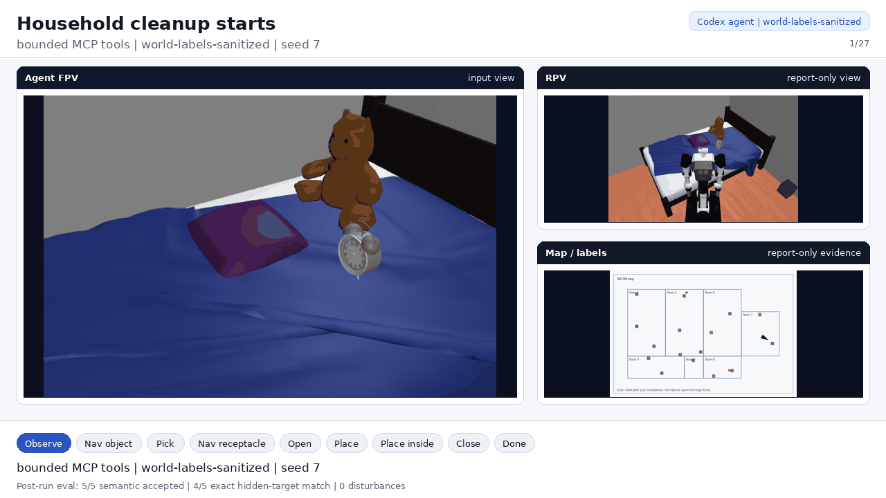
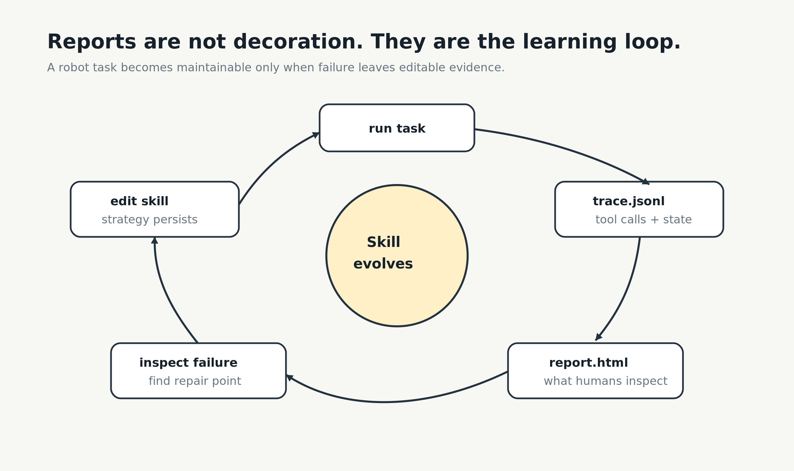

Internal Marathon · Roboclaws
出钳吧
给机器人以大脑
把开放式机器人任务组织成可运行、可观察、可复盘、可迁移的 Agent Skill Loop
MiaoDX × Coding Agents
Roboclaws · Codex / Claude Code · MCP tools · robot reports
Roboclaws · Codex / Claude Code · MCP tools · robot reports
开场先把“脑”的定义收紧：不是模型接入，也不是万能工具，而是任务、技能、工具、后端和证据组成的工程闭环。
section/1 · 一句话
它不是单个机器人 demo
而是一套 task → skill → tool → backend → report 工作流
给机器人以大脑，不是给机器人接一个模型
而是让机器人任务能运行、能失败、能留下证据、能被改进
而是让机器人任务能运行、能失败、能留下证据、能被改进
run
开放目标变成可运行入口
整理房间、拍照、语义建图、导航感知，都进入明确 task surface
observe
每一步留下 trace
Agent 看到什么、调用什么、为什么继续，都能从 artifact 复查
improve
报告反过来改 Skill
失败不是聊天记录里的遗憾，而是下一轮 skill loop 的输入
section/1 · 痛点
机器人接入大模型之后
“会动”并不是最难的部分
旧方式
strategy
prompt、临时脚本、SDK 调用和人工经验散落
review
跑完以后手动翻日志、看截图、猜它到底做了什么
truth
agent 输入和 private scoring truth 容易混在一起
iteration
下一轮主要靠感觉，不知道哪里真的变好
Roboclaws
skill
策略沉淀成可复用、可检查、可迭代的 Agent Skill
trace
每次运行都有工具调用、地图、before/after 和 HTML report
boundary
agent-facing view 和 report-only / private eval 分离
compare
run-to-run 指标和失败证据推动下一轮改进
section/2 · 架构
机器人智能应该住在哪里
策略住在 Skill，能力边界住在 MCP，运行证据反过来喂给 Skill。Report 不是外围工程，而是让大脑变聪明的反馈层
open-ended goal
→ runnable task
→ agent skill
→ bounded MCP capability tools
→ simulator / real-robot backend
→ trace / runtime map / report
→ skill improvement

section/2 · runnable task
先把开放目标
变成有输入、参数、报告和验收口径的运行入口
map-build
semantic-map-build
从公共地图和观察出发，构建运行时语义地图
cleanup
household-cleanup
基于观察、地图和工具调用完成家庭清洁任务
photo/nav
photo / navigation
导航、探索、拍照、真机感知 pilot 都能进入同一证据合同
just run::surface surface=household-world preset=map-build agent_engine=direct-runner
just run::surface surface=household-world preset=cleanup agent_engine=codex-cli
just agent::eval suite=open_ended_goals budget=smoke
section/2 · skill
Skill 承载机器人完成任务的经验
不是一次性 prompt
1
先观察什么
从 agent view 和 public map 开始，而不是直接拿隐藏答案
2
什么时候建图、导航、拾取、放置
Skill 组合能力工具，保留每一步的 trace
3
失败后怎么恢复
把失败模式沉淀成下一轮可复查、可修改的策略
4
哪些证据必须写进 report
让人和 Agent 都能知道任务为什么成功、哪里失败
section/2 · MCP boundary
MCP 不能吞掉整个任务
暴露一个 cleanup_room()，demo 会很快，但智能被藏起来。Roboclaws 让 Skill 负责策略，让 MCP 保持稳定、受控、可审计的机器人能力边界
bad smell
opaque task tool
失败没有明显修复点，人也看不到中间发生了什么
contract
bounded capabilities
observe / navigate / pick / place / done，每次调用都留下证据

section/3 · report contract
每次 serious run
都要留下能复盘的结构化证据
Runtime map 是 Agent 的世界记忆。它把公共观察、物体候选和证据锚点从“当前帧”提升成可复查的任务状态
trace
tool calls / decisions / failure points
map
runtime_metric_map.json · world memory
view
agent_view.json · agent-facing evidence
report
before / after images · score · HTML review

section/3 · backend
Backend 是身体
Skill Loop 才是大脑
同一套 task / skill / tool / report 边界不绑定单一仿真。Agent 不应该直接学习私有 simulator API，而应该依赖 capability profile
simulation
AI2-THOR / MolmoSpaces / Isaac
导航、拍照、家庭清洁、USD scene、camera 和 segmentation evidence
robot
Nav2 / Agibot G2
真实机器人导航、感知和后续 manipulation 能力按证据分层标注

section/4 · before after
Photo task：从人工盯屏
到可量化闭环
127+
tool calls before
人工盯屏仍未稳定完成
37
tool calls after
减少约 71%
3/9
目标覆盖 before
33%
9/9
目标覆盖 after
100% · 自动 done · 3.8 分钟
普通单测和 code review 没发现的 goto 物理坐标 bug，真实仿真 harness 在约 5 分钟内暴露
section/4 · household cleanup
Household cleanup
从单次 demo 到可审查报告
5/5
semantic accepted
cleanup run
1.0
sweep coverage
full sweep
split
private eval
Agent 输入 / 评估证据分离
27
semantic substeps
可逐步复盘

section/4 · real robot boundary
真机方向
从仿真闭环走向真实机器人
18/18
公开 waypoint 尝试
Nav2 pilot
18/18
观察点记录
导航 / 感知边界
sim
仿真侧已跑通
map-build / cleanup / report
robot
物理能力单独标注
不把仿真 pick/place 伪装成真机能力
section/5 · skill loop
Report 和 harness
不是外围工程
机器人系统最危险的地方，不是失败，而是假装成功。没有 trace，Coding Agent 不知道哪里失败；没有 report，人类不知道结果能不能相信
Brain 不是模型，是 run → trace → report → edit skill → rerun → compare 的循环

section/6 · demo
本次主 Demo
semantic-map-build + household-cleanup + Codex agent report
01
给机器人一个开放目标整理房间，或先探索空间并建立可用语义地图
02
Agent 通过受控工具逐步行动
metric_map、observe、navigate、pick/place03
系统生成可复盘报告agent-facing view、before/after、runtime map、semantic substeps、trace、score
04
补充真机导航 / 感知 pilot说明同一合同已经接入真实机器人导航和观察边界
section/6 · 复用性
可复用的不是某个脚本
而是一整套机器人 Agent 工作流
protocol
driver protocol
不同 agent engine 进入同一任务合同
skill
skill contract
导航、拍照、语义建图、清洁经验可沉淀
tool
MCP boundary
能力可组合，策略不藏进一个黑盒工具
artifact
run comparison
每轮都有指标、失败证据和可复现报告
driver protocol
skill contract
task format
MCP tool boundary
artifact schema
run-to-run comparison workflow
section/7 · 养虾心得
给机器人以大脑
不是接一个聊天框
lesson/1
模型能力重要，但不是全部
机器人任务里的智能，必须进入可维护的 skill loop
lesson/2
MCP 越大，审计越难
工具越像任务，越容易藏掉失败原因和修复点
lesson/3
Runtime map 是世界记忆
一次观察要能变成下一次行动可用的证据
lesson/4
Report 是智能的一部分
它让失败可见，让下一轮改进有依据
section/7 · 下一步
从报名材料到复赛 / 决赛
需要固化一条最强演示链路
1
选定主 demo run
固化最新 household-cleanup 和 semantic-map-build artifact
2
补齐真机材料
视频、日志、report、地图和导航证据按能力边界展示
3
压缩旧 photo task 迭代
Run 001 → Run 005 做成一张 Before/After 图或表
4
录制 8 分钟以内演示视频
展示 Agent 如何读 report、调整 Skill，并让下一轮变好
section/8 · 总结
Roboclaws 要证明的不是
机器人偶尔能动起来
机器人 Agent 的开放任务
可以被组织成可运行、可观察、可复盘、可迁移、可持续变好的工程闭环
可以被组织成可运行、可观察、可复盘、可迁移、可持续变好的工程闭环
不是一个模型
不是一个万能工具
是一套能让机器人任务经验真正留下来的 Agent Skill Loop
Repo · github.com/MiaoDX/roboclaws